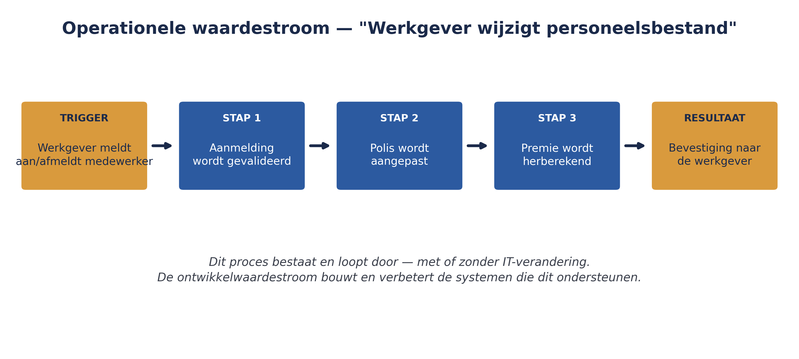
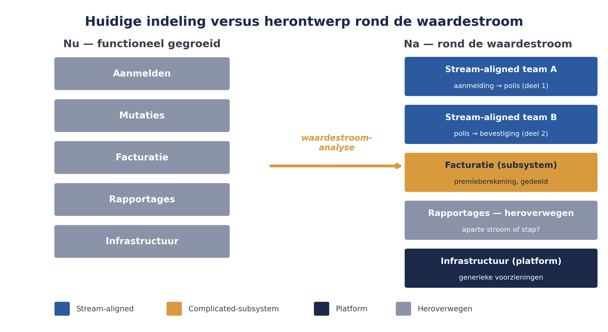

Deel 4 introduceerde de ART als structuur, maar liet één vraag onbeantwoord: hoe bepaalt u wélke teams samen een ART vormen? SAFe geeft hiervoor een methode: eerst de waardestroom in kaart brengen, en pas daarna de ART daaromheen ontwerpen. Voor Meridiaan is dit precies de stap die bij de eerdere, informele indeling in vijf teams is overgeslagen.
5secties
±2udagdeel + huiswerk
12controlevragen
2soorten waardestromen
Positionering. Deze cursus is een voorbereiding op de certificeringen SAFe Agilist (SA) en SAFe Practitioner (SP) van Scaled Agile, en uitdrukkelijk geen vervanging van het officiële SAFe-curriculum — dat wordt uitsluitend aangeboden via geautoriseerde Scaled Agile Partners. Voor terminologie en structuur volgen wij SAFe 6.0, de actuele versie van het Core-raamwerk.
Niveau 1: ➊ Waarom schalen misgaat → ➋ Lean-Agile mindset → ➌ Lean-Agile leiderschap → ➍ Agile teams en de ART → ➎ Waardestromen en ART-ontwerp (hier) → ➏ ART Backlog & WSJF → ➐ PI Planning voorbereiden → ➑ PI Planning uitvoeren → ➒ AI-Native I → ➓ Examentraining + capstone
01
Twee soorten waardestromen
⏱ 14 min
SAFe onderscheidt twee soorten waardestromen, die elkaar aanvullen:
Operationele waardestroom — de stappen waarmee een organisatie doorlopend waarde levert aan een eindklant, van eerste vraag tot geleverd resultaat. Bij Meridiaan bijvoorbeeld: een werkgever meldt een nieuwe medewerker aan, de aanmelding wordt gevalideerd, de polis wordt aangepast, de premie wordt herberekend, de bevestiging gaat naar de werkgever. Dit proces bestaat en loopt door, met of zonder IT-verandering.
Ontwikkelwaardestroom — de stappen waarmee een organisatie de systemen en oplossingen bouwt die de operationele waardestroom ondersteunen of verbeteren: van een idee voor een nieuwe of aangepaste functionaliteit tot de oplevering ervan in productie.
Elke operationele waardestroom kan door één of meerdere ontwikkelwaardestromen worden ondersteund, en één ART levert doorgaans langs één ontwikkelwaardestroom. Het onderscheid is belangrijk omdat het voorkomt dat een organisatie ARTs rond IT-systemen bouwt in plaats van rond klantwaarde — precies de valkuil die bij WGP 2.0 speelde, waar het project rond een technisch systeem (het portaal) was ingericht zonder dat helder was welke operationele stap voor de werkgever daarmee werd verbeterd.
Veelgemaakte fout
Een waardestroom benoemen als "het werkgeversportaal" in plaats van "werkgever wijzigt personeelsbestand". Het systeem is een middel, niet de waardestroom zelf.
Controlevraag
Uit Werkboek deel 5, Zelftoets vraag 1
1Wat is het verschil tussen een operationele en een ontwikkelwaardestroom?Toon antwoord
Operationeel is het doorlopende klantproces; ontwikkeling is het bouwen van de systemen die dat proces ondersteunen.
02
Een waardestroom identificeren
⏱ 16 min
Het identificeren van een waardestroom begint niet bij de techniek, maar bij het traject dat een klant — hier: de werkgever — doorloopt. Een bruikbare methode:
Benoem de trigger — de gebeurtenis die de waardestroom in gang zet (bijvoorbeeld: een werkgever meldt een nieuwe medewerker aan).
Benoem het resultaat — wat de klant uiteindelijk ontvangt (een correcte, actieve polis en een bevestiging).
Breng de tussenstappen in kaart — op hoog niveau, niet tot in elk technisch detail; het gaat om de stroom, niet om een volledig procesmodel.
Identificeer de mensen en systemen die elke stap uitvoeren — dit legt bloot waar teams elkaar nu al raken, en waar afhankelijkheden zitten die een ART-ontwerp moet minimaliseren.
Voor Meridiaan levert deze oefening een operationele waardestroom "Werkgever wijzigt personeelsbestand" op, die loopt van aanmelding/afmelding van medewerkers tot een bijgewerkte polis en een correcte factuur.

Figuur 5-1 — de operationele waardestroom "Werkgever wijzigt personeelsbestand" bij Meridiaan, van trigger tot resultaat
Controlevraag
Uit Werkboek deel 5, Zelftoets vraag 2
1Noem de vier stappen om een waardestroom te identificeren.Toon antwoord
Trigger benoemen, resultaat benoemen, tussenstappen in kaart brengen, mensen/systemen per stap identificeren.
03
Van waardestroom naar ART-ontwerp
⏱ 18 min
Met de waardestroom in beeld, is de volgende stap: welke teams moeten samen deze stroom van waarde kunnen leveren, met zo min mogelijk onderlinge afhankelijkheden? SAFe onderscheidt hierbij globaal twee soorten teams:
Stream-aligned teams — teams die rechtstreeks bijdragen aan een stap in de waardestroom, met zoveel mogelijk end-to-end verantwoordelijkheid voor hun deel.
Complicated-subsystem-, platform- en enabling-teams — teams die een specialistisch onderdeel (bijvoorbeeld een gedeeld dataplatform of premievalidatie-engine) leveren waar meerdere stream-aligned teams gebruik van maken, of die andere teams tijdelijk helpen een vaardigheid of technologie op te pakken.
Het ontwerpprincipe is: minimaliseer afhankelijkheden tussen teams door teams zoveel mogelijk end-to-end verantwoordelijk te maken voor een herkenbaar stuk van de waardestroom, en gebruik platform- of subsystem-teams alleen waar specialistische kennis of een gedeelde voorziening dat vereist. Vergelijk dit met Meridiaan's huidige indeling — Aanmelden, Mutaties, Facturatie, Rapportages, Infrastructuur — die grotendeels langs technische functies loopt in plaats van langs de waardestroom.
Controlevragen
Uit Werkboek deel 5, Opdracht 5.3 — team-type toewijzen
1Een team dat end-to-end verantwoordelijk is voor het verwerken van een adreswijziging, van melding tot bijgewerkte polis — welk teamtype?Toon antwoord
Stream-aligned team.
2Een team met actuariële specialisten dat premieberekeningen als gedeelde dienst levert aan meerdere andere teams — welk teamtype?Toon antwoord
Complicated-subsystem team (specialistische actuariële kennis, gedeeld).
3Een team dat tijdelijk andere teams helpt met het overstappen op een nieuwe testtool — welk teamtype?Toon antwoord
Enabling team (tijdelijke ondersteuning).
4Een team dat de gedeelde cloudinfrastructuur en CI/CD-pijplijn beheert voor alle teams in de ART — welk teamtype?Toon antwoord
Platform team.
04
Terug naar Meridiaan: de ART herontwerpen
⏱ 16 min
Toegepast op de waardestroom "Werkgever wijzigt personeelsbestand" ontstaat een andere indeling dan de huidige vijf teams. Een mogelijk herontwerp:
Twee stream-aligned teams die samen de volledige mutatiestroom end-to-end kunnen opleveren (van aanmelding/afmelding tot bijgewerkte polis), in plaats van een apart team "Aanmelden" en een apart team "Mutaties" die voortdurend op elkaar moeten wachten.
Eén team dat Facturatie en premieberekening als een specialistisch, gedeeld onderdeel levert aan de stream-aligned teams (een complicated-subsystem team, omdat premieberekening actuariële kennis vereist die niet in elk team gedupliceerd hoeft te worden).
Rapportages wordt heroverwogen: is dit een aparte waardestroom, of een stap binnen de bestaande stroom?
Infrastructuur verschuift richting een platformteam dat generieke technische voorzieningen levert aan alle stream-aligned teams, in plaats van zelf inhoudelijke features te bouwen.

Figuur 5-2 — de huidige vijf teams versus het herontwerp rond de waardestroom
Dit herontwerp is niet vrijblijvend — het is een van de eerste concrete beslissingen die de ART-oprichting van Meridiaan vraagt, en raakt mensen die gewend waren tot een ander team te behoren. Dat maakt de link met deel 3 (Leading Change) opnieuw relevant: een teamherindeling is zelf een verandertraject dat om dezelfde zorgvuldigheid vraagt als de bredere ART-lancering.
Controlevragen
Uit Werkboek deel 5, Opdracht 5.4 — het herontwerp beoordelen
1Welk voordeel biedt dit herontwerp ten opzichte van de huidige indeling in vijf functionele teams?Toon antwoord
Minder wachten tussen teams omdat één team een groter, herkenbaar deel van de waardestroom end-to-end kan opleveren; minder overdrachtsmomenten die in het verleden tot vertraging leidden (zoals bij WGP 2.0).
2Welk risico of welke weerstand verwacht u bij de mensen die nu in team Aanmelden of team Mutaties werken?Toon antwoord
Verlies van vertrouwde teamidentiteit, onzekerheid over de eigen rol in het nieuwe team, mogelijk verlies van specialistische focus die mensen prettig vonden.
3Hoe zou u dat risico, met wat u in deel 3 hebt geleerd over Leading Change, aanpakken?Toon antwoord
Een goed antwoord verwijst naar een kleine, betrokken leidende coalitie, vroege en eerlijke communicatie over de reden (het "waarom" vanuit de waardestroomanalyse, niet alleen "het moet van SAFe"), en ruimte voor mensen om zelf mee te denken over de overgang in plaats van het van bovenaf op te leggen.
05
Kernbegrippen uit dit deel
⏱ 10 min
Begrip
Omschrijving
Operationele waardestroom
Het doorlopende traject waarmee een organisatie waarde levert aan een eindklant
Ontwikkelwaardestroom
Het traject waarmee een organisatie de systemen bouwt die de operationele waardestroom ondersteunen
Stream-aligned team
Een team met end-to-end verantwoordelijkheid voor een herkenbaar deel van de waardestroom
Complicated-subsystem-, platform- en enabling-teams
Ondersteunende teamtypen voor specialistische of gedeelde onderdelen
ART-ontwerp
Het bewust vormgeven van teams rond een waardestroom, met minimale onderlinge afhankelijkheden
Controlevragen
Uit Werkboek deel 5, Zelftoets vraag 3, 4 en 5
1Wat is het ontwerpprincipe achter het indelen van teams in een ART?Toon antwoord
Minimaliseer afhankelijkheden tussen teams door teams zoveel mogelijk end-to-end verantwoordelijk te maken voor een herkenbaar deel van de waardestroom.
2Wanneer kiest u voor een complicated-subsystem- of platformteam in plaats van alles in stream-aligned teams onder te brengen?Toon antwoord
Wanneer specialistische kennis of een gedeelde technische voorziening niet in elk team gedupliceerd hoeft te worden.
3Waarom was de bestaande teamindeling bij Meridiaan niet automatisch de juiste indeling voor de ART?Toon antwoord
Omdat de bestaande indeling historisch/functioneel was gegroeid (rond technische taken), niet ontworpen vanuit de waardestroom naar de klant.
Verder naar deel 6
De ART is ontworpen. Deel 6 behandelt hoe de ART bepaalt wát het gaat bouwen en in welke volgorde: de ART Backlog, features, WSJF en capaciteitsallocatie.